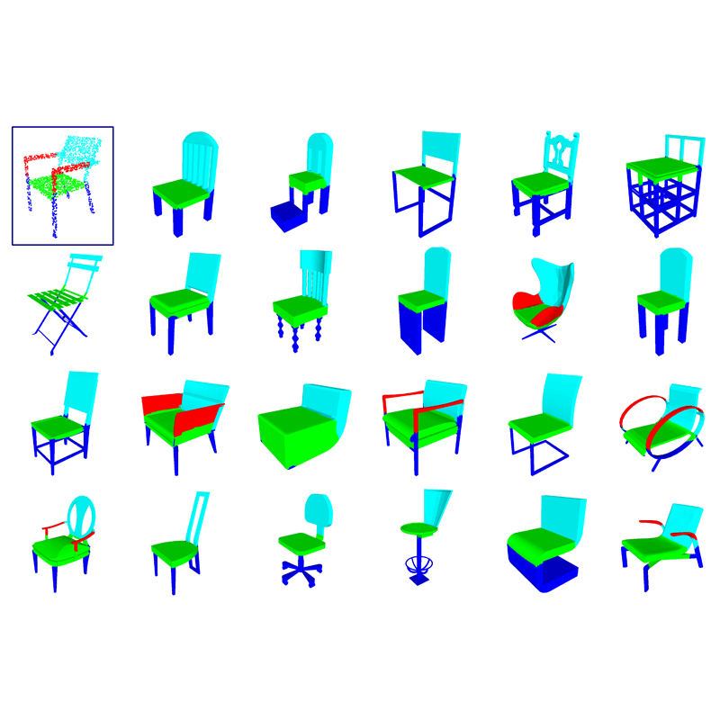
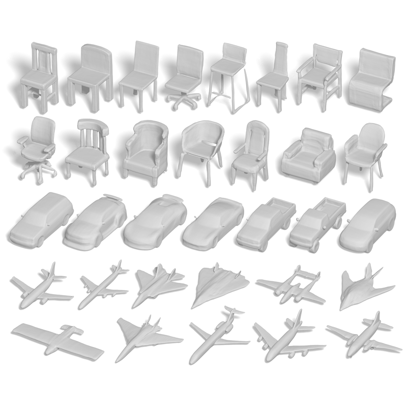

|
Zhiqin ChenPh.D. StudentGrUVi lab, school of Computing Science, Simon Fraser University zhiqinc at sfu dot ca GitHub CV I am a 1st year PhD student at Simon Fraser University, under supervision of Prof. Hao (Richard) Zhang. I received my Master's degree from Simon Fraser University in 2019, and Bachelor's degree from Shanghai Jiao Tong University in 2017. My research interest is Computer Graphics with specialty in Geometric Modeling and Machine Learning. |
|||
Publications |
||||
2020 |
||||

|
BSP-Net: Generating Compact Meshes via Binary Space Partitioning
Zhiqin Chen, Andrea Tagliasacchi, and Hao Zhang Accepted to CVPR 2020 (oral) [arXiv] [GitHub] [oral video] [project page] |
|||
2019 |
||||

|
LOGAN: Unpaired Shape Transform in Latent Overcomplete Space
Kangxue Yin, Zhiqin Chen, Hui Huang, Daniel Cohen-Or, Hao Zhang Accepted to SIGGRAPH Asia 2019 [arXiv] [GitHub] |
|||
|  | BAE-NET: Branched Autoencoder for Shape Co-Segmentation
Zhiqin Chen, Kangxue Yin, Matthew Fisher, Siddhartha Chaudhuri, and Hao Zhang Accepted to ICCV 2019 [arXiv] [GitHub] |
|||
|  | Learning Implicit Fields for Generative Shape Modeling
Zhiqin Chen and Hao Zhang Accepted to CVPR 2019 [arXiv] [GitHub] |
|||
ReviewerGraphical Models (GMOD) 2018, Pacific Graphics (PG) 2019, CVPR 2020 |
||||
Teaching[TA] Spring 2020 - CMPT 743 G101 practices in visual computing II[TA] Spring 2019 - CMPT 743 G101 practices in visual computing II [TA] Fall 2017 - CMPT 120 D100 introduction to computing science and programming I |
||||
|
|
||||